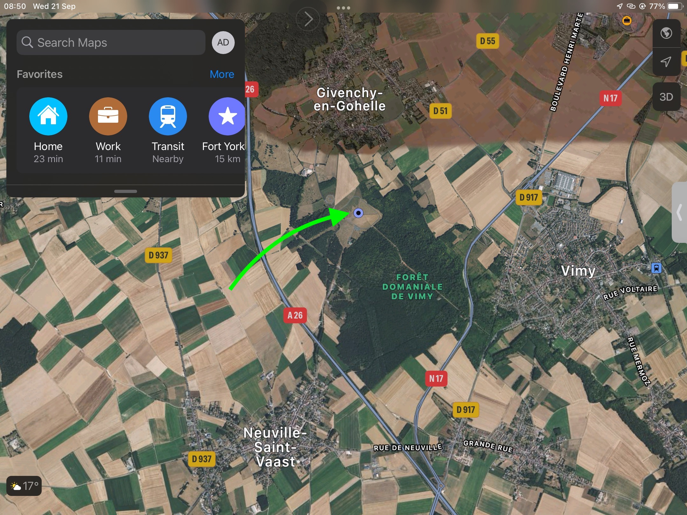
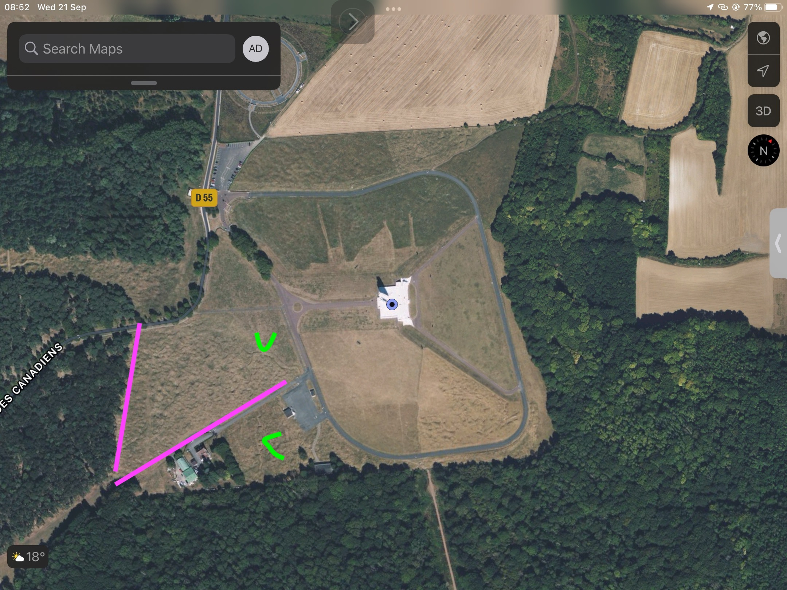

Photos as an Overview
WW1
10 February 1917
Source
June 1917
Source
Today(ish)
Monument Overview
Src: Apple Maps

Shell Holes and Trenches
Src: Apple Maps
Green Arrows point to trenches
Note the shell holes between magenta lines
